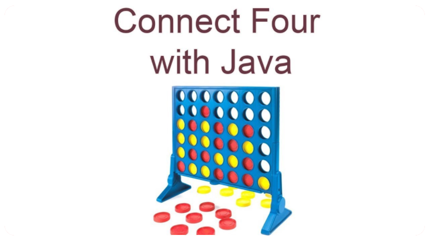

<!DOCTYPE html>
<html>
<head>
    <title>Minor Project</title>
    <link rel="shortcut icon" href="../main website/IMAGES/Screenshot_395.png">
    <link rel="stylesheet" type="text/css" href="connect4.css" media="screen">
</head>

<body >

            <div id="header" class="header">
                
            </div>

    
    <div id="page">
        <div id="content">    
                <div id="list">    
                    <ul>
                        <button class="btn"><b>MINOR PROJECT</b></button>
                        <span><h1>Minor Project Synopsis  on Connect 4 game </h1> <p>By Pranshu Bhushan, Vishnu Singh, Sayan Chaterjee and Aniket Sharma</p>  </span>
                        

                        <button class="btn"><b>INTRODUCTION</b></button>
                        
                        <li>
                            <h3>What is Connet 4</h3>
                            <p>Connect Four is a two-player connection board game, in which the players choose a colour and then take turns dropping coloured discs into a seven-column, six-row vertically suspended grid. The pieces fall straight down, occupying the lowest available space within the column. The objective of the game is to be the first to form a horizontal, vertical, or diagonal line of four of one's own discs. Connect Four is a solved game. The first player can always win by playing the right moves. The game was first sold under the Connect Four trademark by Milton Bradley in February 1974. We are making two iterations of this game one for PC in which we will use Java programming language and fxml for the front end and the second iteration will be for Android devices and will also use Java with android repository and xml for the front end. The game will have 2 modes single player against computer and two player multiplayer mode. In two player multiplayer mode the players will compete against each other, and they can set their custom names too and in the single player the player will compete against the computer which will be using Artificial Intelligence (Mini-max Algorithm).
                                The game will end when one player connects 4 pieces on the grid the game will give a pop out message congratulating the player.    
                                </p>
                            
                        </li>

                        <button class="btn"><b>OBJECTIVE</b> </button>
                        
                        <li>
                            <p>This project aims to develop a game which will work on lot of devices as java is platform independent programming language which means java compiled code(byte code) can run on all operating systems. The main three objectives of this project are as mentioned below :-       </p>
                            <h3>[1] MAKING THE GAME USING JAVA PROGRAMMING LANGUAGE</h3>
                            <p>Our first objective will be of building the complete connect4 game on             
                                java and perfecting the logic needed to complete the game. This        
                               game will be multiplayer I.e., two players can play the game and
                               compete with each other. 
                      </p>
                        </li>
                        <li>
                            <h3>[2] MAKING THE GAME FOR ANDROID OS.</h3>
                            <p>Once we make the game on the java platform then we will make the connect4 game for the android operating system using android studio and java programming language and using the same logic we perfected on the java program. </p>
                        </li>
                        <li>
                            <h3>[3] ADDING AI </h3>
                            <p>After building both the versions we will add the AI which is already 
                                Available on the internet we will use an algorithm which is called 
                                Mini-Max Algorithm. Mini-max algorithm is a recursive or backtracking algorithm which is used in decision-making and game theory.
                                </p>
                            
                                <p>The main objective of this project is to make a platform independent game that work on most of the devices and operating system and understand how to develop a game from scratch which is multiplayer and also have an AI so it can also be played in single player mode also</p>
                        </li>
                       

                        <button class="btn"><b>EXISTING FEATURES</b></button>
                        <br>
                        <br>
                
                        
                
                        <li>
                            <h3> Using Mini-Max Algorithm in Artificial Intelligence</h3>
                            <p>Mini-max algorithm is a recursive or backtracking algorithm which is used in decision-making and game theory. It provides an optimal move for the player assuming that opponent is also playing optimally.
                                Mini-Max algorithm uses recursion to search through the game-tree.
                                Min-Max algorithm is mostly used for game playing in AI. Such as Chess, Checkers, tic-tac-toe, go, and various tow-players game. This Algorithm computes the minimax decision for the current state.
                                In this algorithm two players play the game, one is called MAX and other is called MIN.
                                Both the players fight it as the opponent player gets the minimum benefit while they get the maximum benefit.
                                Both Players of the game are opponent of each other, where MAX will select the maximized value and MIN will select the minimized value.
                                The minimax algorithm performs a depth-first search algorithm for the exploration of the complete game tree.
                                The minimax algorithm proceeds all the way down to the terminal node of the tree, then backtrack the tree as the recursion.</p>
                        </li>

                        <button class="btn"><b>HARDWARE AND SOFTWARE REQUIRMENTS</b></button>
                        <li>
                            <h3>[1] FOR JAVA CONNECT 4(For PC)</h3>
                            <h6>[1] JAVA version 1.8 or higher--</h6>
                            <p>Java is a high-level, class-based, object-oriented programming language that is designed to have as few implementation dependencies as possible. It is a general-purpose programming language intended to let application developers write once, run anywhere (WORA), meaning that compiled Java code can run on all platforms that support Java without the need for recompilation. Java applications are typically compiled to bytecode that can run on any Java virtual machine (JVM) regardless of the underlying computer architecture. The syntax of Java is similar to C and C++ but has fewer low-level facilities than either of them.</p>
                             <h6>[2] IntelliJ IDEA IDE-- </h6>
                             <p>IntelliJ IDEA is an Integrated Development Environment (IDE) for JVM languages designed to maximize developer productivity. It does the routine and repetitive tasks for you by providing clever code completion, static code analysis, and refactorings, and lets you focus on the bright side of software development, making it not only productive but also an enjoyable experience.</p>
                            <h3>FOR CONNECT 4 ANDROID APPLICATION(For Mobile Devices)</h3>
                            <h6>[1] Android Studio</h6>
                            <p>Android Studio is the official Integrated development environment (IDE) for Android 
                                platform development.
                                It was announced on May 16, 2013 at the Google I/O conference. Android Studio is 
                                freely available under the Apache License 2.0 . 
                                Android Studio was in early access preview stage starting from version 0.1 in May 
                                2013, then entered beta stage starting from version 0.8 which was released in June 
                                2014.
                                The first stable build was released in December 2014, starting from version 1.0. 
                                Based on JetBrains' IntelliJ IDEA software, Android Studio is designed specifically for 
                                Android development. It is available for download on Windows , Mac OS X and Linux , 
                                and replaced Eclipse Android Development Tools (ADT) as Google's primary IDE for 
                                native Android application development.
                                </p>
                            <h6>[3] The SDK and AVD Manager</h6>
                            <p>
                                This tool serves a number of important functions. It manages the different versions of 
                                the Android SDKs (build targets) that you can develop for, as well as third-party addons, tools, devices drivers, and documentation. Its second function is to manage the 
                                Android Virtual Device configurations (AVDs) you use to configure emulator instances 
                            </p>
                            <h6>[3] Android Debug Bridge</h6>
                            <p>The Android Debug Bridge (ADB) connects other tools with the emulator and devices. 
                                Besides being critical for the other tools (most especially the Eclipse ADT plug-in) to 
                                function, you can use it yourself from the command line to upload and download files, 
                                install and uninstall packages, and access many other features via the shell on the 
                                device or emulato</p>
                        </li>
                        <button class="btn"><b>CONCLUSION</b></button>
                        <li>
                       
                            <p> By building this project we will increase aur skill set and learn how to build and develop games and programs ,we chose java as our main programming language because it’s a platform independent programming language which will work on all the devices and operating systems. Connect4 is a </p>
                        </li>
                        

        
                        
                    </ul>
                    </div>  

                    


                   
                
            

</body>
</html>
